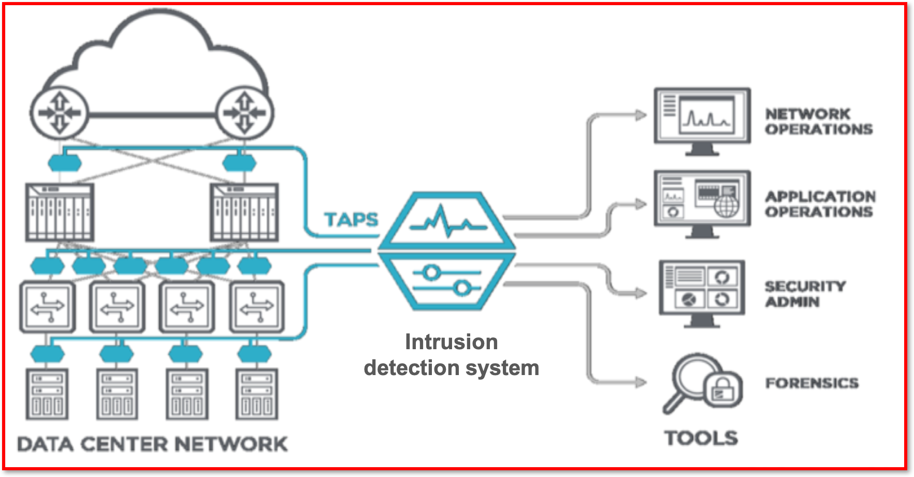
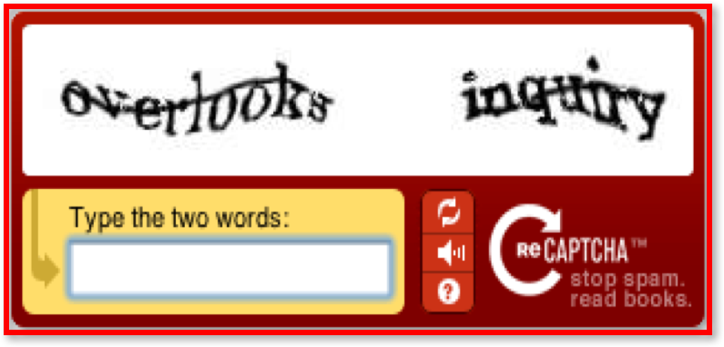
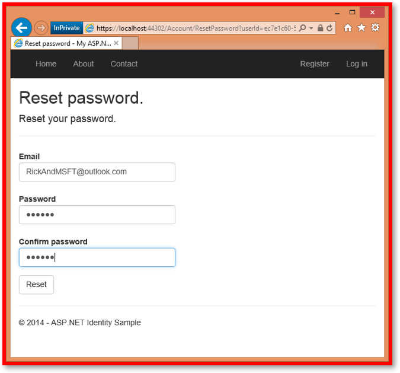

3.6.3 Methods to detect and prevent Cyber Security Threats
Table of Contents
- 1. Identifying Vulnerabilities
- 2. Preventing Vulnerabilities
- Learn It: How can we prevent network vulnerabilities?
- Learn It: Biometric Measures
- Try It: Biometric Research
- Learn It: Passwords and Usernames
- Learn It: CAPTCHA
- Try It: CAPTCHA
- Learn It: Email Confirmations
- Try It: Email Confirmations
- Learn It: Anti-Malware Software and Automatic Software Updates
- Badge It: Exam Questions
- Badge It: Exam Questions
- Badge It: Exam Questions
1 Identifying Vulnerabilities
Learn It: How can we Identify Vulnerabilities?
- There are many methods that a company can use to identify security vulnerabilities.
- These can include:
- Network Forensics.
- Penetration Testing (Covered in 3.6.1 Cyber Security Threats)
Learn It: Network Forensics
What is network forensics? 
- Police forensic work involves the use of
scientific methodsandtechniquesto investigate a crime. - This term can be applied in much the same way but in the
context of network forensics. - This involves capturing, storing and analysing network events using
special software. - Network managers can
monitorbusinesstransactionstoverifythat they arenot fraudulent, or they can stopsecurity attacksbefore they can causedamagea network system. Network forensic softwarecan also detectdata leaks, where confidential data is being transferred to an external source.- The software can additionally
revealwho communicated with whom, when, how and how often. - After a
network attack, data packets can beanalysedtodiscoverhow the network was attacked anddecisionscan bemadeon how topreventfuture attacks.
Learn It: Penetration Testing
What is penetration testing?
- Penetration Testing is used to find any
security weaknessesin a system. It is the process ofattemptingto gain access to resources without knowledge of usernames, passwords and other normal means of access. - Penetration testing is also called
pen testingorethical hacking, is the practice of testing a computer system, network or web application to findsecurity vulnerabilitiesthat ahackercouldexploit. - Penetration testing can be
automatedwith software applications orperformed manually.
- The strategy is to:
- Gather information about the target of possible attacks.
- Identify possible entry points.
- Attempt to break in.
- Report back the findings.
Black-box Penetration Test
- The
aimofblack-box pentration testingis tosimulatean external hacking or cyber warfare attack. - Testers are
given very littleorno informationabout the network prior to the test. The test could target email servers, web servers or firewalls. - The objective is to find out:
- Whether a hacker can get in.
- How far they can get.
- What they can do on the system.
White-box Penetration Test
- The
aim of white-box penetration testingis tosimulateamalicious insiderwho has knowledge of and possibly basic credentials for thetarget system. - Testers are given
basic informationabout the network in advance of the testing. This could include IP addresses, network protocols and even passwords. - It puts the tester in the
positionofan insider, to determine how much damage a disgruntled or dishonest employee could cause.
2 Preventing Vulnerabilities
Learn It: How can we prevent network vulnerabilities?
- There are many methods that an organisation can use to prevent and deal with threats to network security.
- We will cover the following methods:
- Biometric Measures.
- Passwords and Usernames.
- CAPTCHA.
- Email Confirmations.
- Anti-Malware Software and Automatic Software Updates.
Learn It: Biometric Measures
Biometric Measures
Biometrics - Biometrics measures physical traits. Biometrics are measures of biological quantities or patterns but also means measurements of an individual's features, such as fingerprints, that can identify or authenticate a person. Used this way, a biometric is a password that cannot be forgotten, lost or stolen.
- Biometrics covers a
variety of technologiesin whichunique identifiableattributes of people are used foridentificationandauthentication. - These include, a
person’sfingerprint scan, retinal (iris) scan, face scan and voice pattern sample which can be used tovalidatetheidentityof individua seeking to controlaccessto computers, airlines, databases and other areas which may need to berestricted. - The
probabilityoftwo peoplehavingidentical biologicalcharacteristics isextremely rare, and so these methods can be used to positively identify a person. - Biometric systems are often used on
mobile devicesand theadvantagesof these methods over password entry are that it isnot possibletostealorforgeta biometric characteristic. - Biometric Measures - Using some
partof aperson's biologyto access acomputer/device system, instead of using a password. - For example:
- Mobile phones and tablets that unlock on scanning a fingerprint.
- Doorbells that unlock when a person's iris or retina is scanned.
- Voice recognition.
- Face recognition.
Try It: Biometric Research
- Q1: Research two biometric methods and their uses?
Learn It: Passwords and Usernames
Passwords and Usernames
Passwords and Usernames - Is a technique of fraudulently obtaining private information, often using email or SMS.
- Automated procedures that ensure that
secure password policiesare followed toensurethat users who do not follow these procedures arenot allowedinto a system. - Password strength is a measure of the
effectivenessof a password against guessing or brute-force attacks. - In its usual form, it estimates
how manytries an attacker who does not have direct access to the password would need on average to guess it correctly. Thestrengthof a password is a function of length, complexity, and unpredictability. - Using strong passwords
lowersoverallriskof asecurity breach, but strong passwordsdo not replacethe need for other effective security controls. - Passwords
should containa combination of upper and lower-case letters as well as numbers and symbols. (E.G. $tROng p@s$worDs). - Simarly, default passwords can be a problem. For example, a router's new owner might
not changethe default password from admin or password when they buy it. Thedefault passwordis usually found in theinstruction manualor on the device itself. - Leaving a
default passwordis one of themajor factorsin compromising the security of a system.
Learn It: CAPTCHA
 CAPTCHA
CAPTCHA - Is an acronym for Completely Automated Public Turing test to tell Computers and Humans Apart. is a type of challenge–response test used in computing to determine whether or not the user is human.
- A CAPTCHA is a
programthatprotects websitesagainstbotsby generating and grading tests thathumanscan pass, but currentcomputer programs cannot. For example, humans can read distorted text as the one shown above, but current computer programs cannot. - The most common type of CAPTCHA was first invented in
1997by two groups working in parallel. This form of CAPTCHA requires that the user type the letters of adistorted image, sometimes with the addition of an obscured sequence of letters or digits that appears on the screen. - Because the test is
administered by a computer, incontrastto the standard Turing test that is administered by ahuman, a CAPTCHA is sometimes described as areverse Turing test.
- CAPTCHAs have several applications for practical security, including (but not limited to):
- Preventing Comment Spam in Blogs.
- Protecting Website Registration.
- Protecting Email Addresses From Scrapers.
- Online Polls.
- Preventing Dictionary Attacks.
- Search Engine Bots.
- Worms and Spam.
Try It: CAPTCHA
- Q2: Even perfectly sighted individuals sometimes find CAPTCHA text very difficult or impossible to read. (a) Does the use of CAPTCHA images descriminate against any computer users? (b) And what other newer versions of CAPTCHA are available to address this issue?
Learn It: Email Confirmations
 Password Confirmations
Email Confirmations - Often, when a password is changed, a user must verify this change by clicking on a link sent to a registered email address. This can prevent hackers from changing passwords un-noticed.
- When you
sign upfor a new web service, you will sometimes be asked toverifyyour details through anemail verification process. - You will
not be ableto complete the web service application process andactivateyour new account until you have verified and confirmed your email address. - This method is considered a best practice, to confirm the email of a new user registration, so that it can be confirmed that the individual is
not impersonatingsomeoneelse. - Suppose you had a discussion forum, and you wanted to prevent
yli@example.comfrom registering asnolivetto@contoso.com. Without email confirmation,nolivetto@contoso.comcould receive unwanted email from your app. - Suppose the user
accidentallyregistered asylo@example.comand had not noticed the misspelling ofyli. - They would not be able to
use passwordrecovery because the appdoes nothave theircorrect email address. - Email confirmation provides
limited protectionfrombots. Email confirmationdoesn'tprovideprotectionfrom malicious users withmany email accounts.
Try It: Email Confirmations
- Q3: Have you ever been required to wait for email confirmation and click on a link to complete a registration process? Do you always complete the registration?
Learn It: Anti-Malware Software and Automatic Software Updates
Anti-Malware Software
- Anti-malware is a type of
softwaredeveloped toscan, identifyandeliminate malware, also known as malicious software, from an infected system or network. - It
securesan individual system or an entire business network frommalicious infectionsthat can be caused by a variety of malware that includes viruses, worms, trojans, rootkits, spyware and adware. - Anti-malware can be deployed on
individual computers, agateway serveror even on adedicated network appliance. - An
effectiveanti-malware tool includes multiple features likeanti-spywareandphishing toolsto ensure complete protection.
- Anti-Malware Software will protect a computer in three ways:
- It prevents harmful programs from being installed on a computer.
- It prevents important files, such as the operating system (OS), from being changed or deleted.
- If a virus does manage to install itself, the software will detect it when it performs regular virus system scans. Any viruses detected will be removed.
- New viruses are created regularly, so it's important that any anti-virus software is regularly updated.
Automatic Software Updates
- Popular software is a
common targetfor hackers and malware. For example, browsers, pdf readers, application software and even operating systems. - These can
allbeautomatically updatedby selecting options to automatically update and install either from the operating system or from the software. - The top most out-of-date Windows programs installed on PCs around the world shows that in more than
94% of cases, users who have installed Adobe Shockwave, VLC Media Player, and Skype on their computershaven't updatedthem to the latest versions. - Out-of-date Microsoft Office programs are another category of applications which put their users at risk, especially given that
15% of all Office installationsare Enterprise 2007, an Office version Microsoft has stopped supporting since 2017 which means that ithasn't receivedany bug fixes or security patches for almosttwo years. - Threats will often exist in combination. A
usernameacquired viaphishingcould be used in collaboration with aweak, easy-to-guess passwordto introduce avirusthat specifically seeks outunpatched software.
Badge It: Exam Questions
Silver - Answer the following questions:
- Define two biometric methods of identification, and for each one, give an example of where it might be used? (4 Marks)
Upload to 3.6 Fundamentals of Cyber Security - 3.6.3 Cyber security Threats: Silver on BourneToLearn
Badge It: Exam Questions
Gold - Answer the following questions:
- Define the term network forensics? (2 Marks)
- Briefly explain what network forensics can prevent and how they are used? (4 Marks)
Upload to 3.6 Fundamentals of Cyber Security - 3.6.3 Cyber security Threats: Gold on BourneToLearn
Badge It: Exam Questions
Platinum - Answer the following questions:
- Define what anti-malware is and how this can be used to protect the security of a computer system? (4 Marks)
- State the three ways that anti-malware software can protect a computer system? (3 Marks)
- Why is it dangerous to not keep your application software and operating system up-to-date? (6 Marks)
Upload to 3.6 Fundamentals of Cyber Security - 3.6.3 Cyber security Threats: Platinum on BourneToLearn